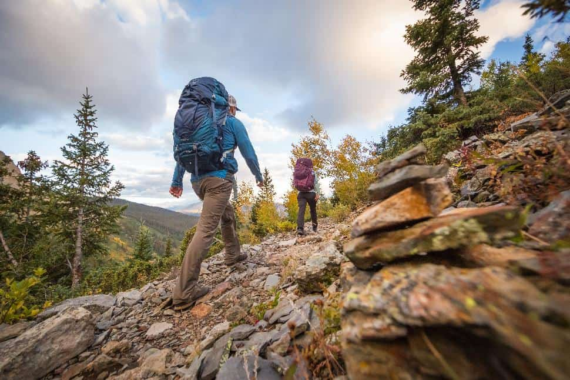
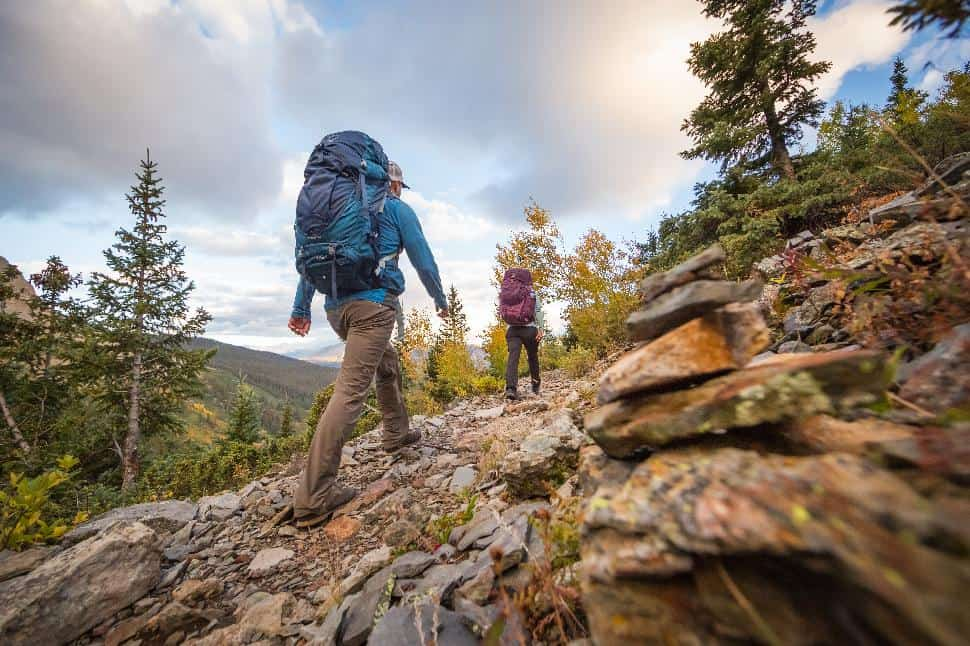

About Hiking
Hiking is a great way to connect with nature and stay active. It offers a fantastic opportunity to explore the outdoors, relieve stress, and improve your physical health.
Hiking can be enjoyed by people of all ages and fitness levels, making it a versatile activity. Whether you’re strolling through a local park or trekking in the mountains, hiking allows you to immerse yourself in beautiful landscapes.
Benefits of Hiking:
- Improves cardiovascular health
- Enhances mood and mental well-being
- Strengthens muscles and bones
- Boosts creativity and problem-solving skills
Safety Tips:
- Always let someone know your plans before heading out.
- Carry enough water and snacks to stay hydrated and energized.
- Wear appropriate footwear and clothing for the terrain and weather.
- Know your limits and choose trails that match your skill level.
Types of Hikes:
- Day hikes: Shorter hikes that can be completed in a single day.
- Backpacking: Multi-day trips that involve carrying camping gear.
- Trail running: A faster-paced hike that involves running on trails.
- Urban hiking: Exploring city parks and nature areas within urban settings.
Quick Facts About Hiking
| Fact | Description |
|---|---|
| Average Duration | Hikes can range from a few hours to several days. |
| Best Time to Hike | Spring and fall offer ideal weather conditions. |
| Essential Gear | Good footwear, water, and snacks are crucial. |
| Health Benefits | Boosts physical health and mental well-being. |
Hiking Photos comparing the mountains and land trails
 
